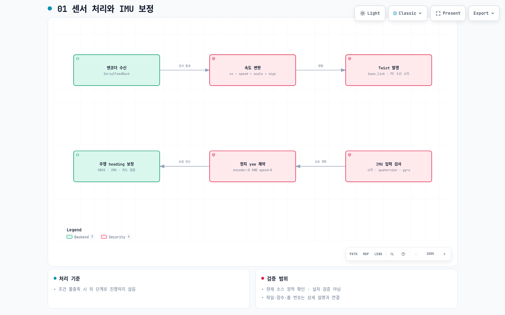
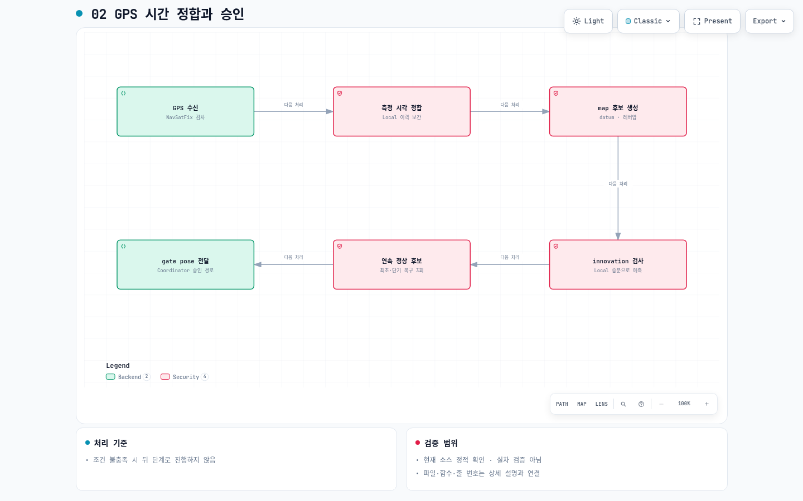
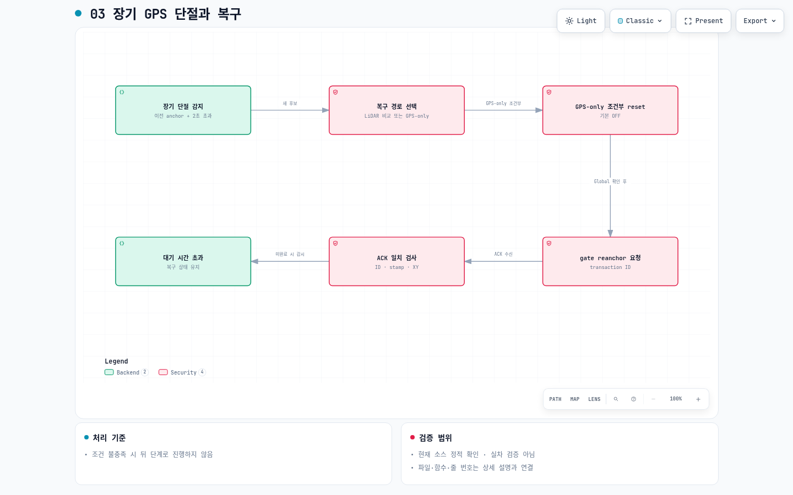
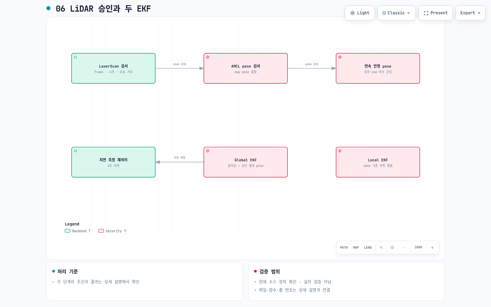

엔코더 수신 — SerialFeedBack
Header가 없는 원본 feedback을 받는다. alive 반복, 비유한 speed, 속도·delta·steer 범위 위반은 해당 표본을 거부한다.
src/imu_encoder_fusion/encoder_to_twist_adapter.cpp:185bool EncoderToTwistAdapter::validate_measurement
현재 Mando Localization 소스의 처리 절차(3단계), 실패·복구·상태 판단(4단계), 파일·함수·줄 번호·SHA-256 근거(5단계)를 함께 기록했다. 기준: 2026-09-13 작업 시점의 파일. Git 저장소가 아닌 현재 workspace를 기준으로 하며 특정 main commit으로 표시하지 않는다.
설명은 한국어, ROS·함수 이름은 원문이다. Archify 고정 Viewer UI와 html lang은 지원 범위에 따라 영어로 표시된다.
정적 코드 확인: 아래 설명과 코드 링크. 설정: YAML/launch에 지정된 값. 이번에 하지 않은 검증: 실차·MORAI·rosbag 신규 실행 및 위치 정확도 측정. 기존 07번 재생 그림은 별도 산출물이며 이 문서의 실행 검증으로 취급하지 않는다.
기본값 근거: encoder_calibration.yaml · imu_heading_calibration.yaml · initial_heading.yaml

Header가 없는 원본 feedback을 받는다. alive 반복, 비유한 speed, 속도·delta·steer 범위 위반은 해당 표본을 거부한다.
src/imu_encoder_fusion/encoder_to_twist_adapter.cpp:185bool EncoderToTwistAdapter::validate_measurement
현재 scale=1, sign=1이다. tick당 거리 보정은 꺼져 있고 calibration_state=unmeasured다. vy=0은 접지 모델 제약이며 측정값이 아니다.
src/imu_encoder_fusion/encoder_to_twist_adapter.cpp:236EncoderToTwistAdapter::make_twist(
검사를 통과하면 PC 수신 시각으로 /molit/vehicle/twist를 발행한다. 실패한 표본은 발행하지 않는다.
src/imu_encoder_fusion/encoder_to_twist_adapter.cpp:250void EncoderToTwistAdapter::encoder_callback
CalibratedIMU는 IMU 표본을 검사하고 이력을 저장한다. 초기 RDDF heading과 센서 장착 회전을 사용하며 GNSS 보정 완료와 초기화는 별개다.
scripts/calibrated_imu_core.py:267 def observe_imu(
fresh feedback과 변하는 alive가 있는 정확한 0 상태에서 yaw를 유지하고 차량 Z축 gyro 성분을 제거한다. 모순값·stale·미수신은 정지 증거가 아니다.
scripts/calibrated_imu_core.py:141 def apply(
clock_ready, GNSS 정확도·속도, IMU/encoder 시간 정합, 전후진, 회전·기울기, 직진 후보 분산·시간·변위를 검사한다. 불합격 사유를 기록하고 보정을 승인하지 않는다. one_shot 승인 후 보정 유지.
scripts/calibrated_imu_core.py:323 def observe_gnss(
기본값 근거: gps_reference.yaml · time_sync.yaml

fix 상태, frame, timestamp, 좌표·covariance를 검사한다. clock readiness와 대기열 용량 조건을 만족한 입력만 정합 대기에 넣는다.
src/odometry_gps_fusion/odometry_gps_fusion.cpp:735void OdometryGpsFusion::gps_callback(
GPS 원래 header 시각의 Local Odometry를 조회한다. 늦게 오는 Local은 제한된 시간 대기한다. 만료·역행·지원되지 않는 시각은 버리고 현재 yaw로 대체하지 않는다.
src/odometry_gps_fusion/odometry_gps_fusion.cpp:336void OdometryGpsFusion::process_pending(
datum 기반 투영과 측정 시각 yaw를 이용한 레버암 보정을 수행한다. quality candidate는 복구 비교용이며 아직 공개 GPS 승인 pose가 아니다.
src/odometry_gps_fusion/odometry_gps_fusion.cpp:769void OdometryGpsFusion::process_fix(
직전 승인 map anchor와 같은 시각 Local anchor에서 예상 위치를 구한다. 거리·Mahalanobis 기준을 넘으면 복구 게이트를 unhealthy로 표시하고 승인하지 않는다.
src/odometry_gps_fusion/odometry_gps_fusion.cpp:463bool OdometryGpsFusion::innovation_is_acceptable(
후보 간 큰 이동은 연속 카운터를 초기화한다. observeHealthy가 충족되기 전에는 gate pose를 발행하지 않는다. 최초 승인 전에는 INITIALIZING과 복구 상태를 구분한다.
src/common/consecutive_recovery_gate.cpp:14bool ConsecutiveRecoveryGate::observeHealthy(
유효한 정상 gate pose는 Coordinator를 거쳐 공개 GPS pose가 된다. reanchor_pending 중에는 relay하지 않는다. 그 외 정상 gate pose 수신은 reset 대기를 지우고 recovery_active=false 및 TRACKING으로 돌아가므로 장기 복구 중이라고 무조건 relay가 차단되는 것은 아니다.
src/relocalization/relocalization_coordinator.cpp:250void RelocalizationCoordinator::gpsGatePoseCallback(
기본값 근거: relocalization_policy.yaml

새 quality candidate가 도착했고 마지막 승인 gate pose 수신 이후 2초를 초과한 경우 장기 복구를 시작한다. callback 자체가 없는 동안에는 Manager timeout이 먼저 작동한다.
src/relocalization/relocalization_coordinator.cpp:182void RelocalizationCoordinator::gpsCandidateCallback(
fresh·시간 정합 LiDAR와 GPS 거리 5m 이내인 증가 GPS 후보 3회를 요구한다. LiDAR mismatch는 GPS-only로 우회하지 않는다. GPS-only reset은 현재 기본 비활성이다.
src/relocalization/relocalization_policy.cpp:20RelocalizationDecision RelocalizationPolicy::evaluate(
활성화하더라도 measured datum, fresh 정지 속도, 후보 5회, fresh Global을 요구한다. Global set_pose 후 증가 timestamp 결과 3회의 목표 거리 확인이 필요하다. LiDAR 보조 경로는 이 reset을 건너뛴다.
src/relocalization/relocalization_coordinator.cpp:479bool RelocalizationCoordinator::requestGpsOnlyReset(
LiDAR 후보 승인 또는 GPS-only Global 확인 뒤 gate anchor 변경을 요청한다. 적용 전 공개 GPS pose를 보내지 않는다.
src/relocalization/relocalization_coordinator.cpp:512void RelocalizationCoordinator::requestGateReanchor(
gate가 실제 anchor 적용 후 ACK한다. Coordinator는 요청 ID와 stamp·XY가 일치할 때만 finishRecovery로 완료한다.
src/relocalization/relocalization_coordinator.cpp:338void RelocalizationCoordinator::reanchorAcceptedCallback(
Global 확인 또는 reanchor ACK가 1초 예산을 넘으면 TIMEOUT 상태를 기록하고 recovery_active=true를 유지한다. 서비스 존재 대기 0.30초는 동기 call 자체의 hard timeout이 아니다.
src/relocalization/relocalization_coordinator.cpp:367void RelocalizationCoordinator::timerCallback(
기본값 근거: status_policy.yaml
IMU·원본 feedback·Twist·Local Odom 건강도를 확인한다. unhealthy이면 시작 3초 이내 INITIALIZING, 이후 FAULT. 둘 다 valid=false.
src/status_manager/localization_state_evaluator.cpp:18StateDecision LocalizationStateEvaluator::evaluate(
local motion이 정상이어도 relocalizing이면 RELOCALIZING / false. 소스 복구·소스 충돌·Global 일관성 문제는 Manager에서 이 조건에 반영한다.
src/status_manager/localization_state_evaluator.cpp:26 if (input.relocalizing)
Global output unhealthy이면 시작 유예 안에는 INITIALIZING, 이후 FAULT. Global 토픽이 존재하는 것만으로 healthy가 되지 않는다.
src/status_manager/localization_state_evaluator.cpp:30 if (!input.global_output_healthy)
활성 소스 모두 healthy이면 TRACKING / true, 일부만 healthy이면 DEGRADED / true. LiDAR를 비활성화한 replay에서는 GPS만으로 판단한다.
src/status_manager/localization_state_evaluator.cpp:37 if (input.absolute_healthy_count >
healthy 절대 소스가 없고 anchor도 없으면 INITIALIZING / false. anchor가 있고 시간 2초·거리 10m 모두 이내이면 DEAD_RECKONING / true. 하나라도 초과하면 FAULT / false.
src/status_manager/localization_state_evaluator.cpp:44 if (!input.anchor_seen
evaluated state/valid 또는 recovery heartbeat 미수신·0.50초 초과이면 FAULT / false. fresh recovery active이면 RELOCALIZING / false. 나머지만 Manager 결과를 공개한다.
src/supervisor/localization_supervisor.cpp:33SupervisorDecision LocalizationSupervisorArbiter::evaluate(
기본값 근거: status_policy.yaml
/molit/localization/global/odometry는 추정 결과 입력이다. 최종 사용 승인과 별개이며 Global 출력이 계속 있어도 공개 최종 토픽은 차단될 수 있다.
src/output_gate/localization_output_gate.cpp:131void LocalizationOutputGate::odometryCallback(
false, 미수신, 수신 시각 0, 미래 receipt, stale valid이면 즉시 return한다. 이전 pose를 반복 발행하지 않는다.
src/output_gate/localization_output_gate.cpp:134 if (!valid_ || valid_receipt_time_.isZero()
부모 map, child base_link, 0이 아닌 stamp, age 0.20초 이하, 미래 0.05초 이하를 요구한다. 위치 xyz도 유한해야 한다.
src/output_gate/localization_output_gate.cpp:89 if (message.header.stamp.isZero()
quaternion 정규화 오차와 pose covariance를 검사한다. XY 분산 상한은 25m² 설정이며 측정 정확도 보장이 아니다.
src/output_gate/localization_output_gate.cpp:103 if (!MessageValidation::normalizeQuaternion(
Twist covariance와 linear/angular 6개 성분의 유한성을 검사한다. 어떤 검사든 실패하면 해당 Odometry를 발행하지 않는다.
src/output_gate/localization_output_gate.cpp:116 const geometry_msgs::Twist& twist =
모든 검사를 통과한 메시지만 /molit/localization/odometry로 전달한다. 이 노드는 차량 제동 명령을 발행하는 Controller가 아니다.
src/output_gate/localization_output_gate.cpp:147 output_publisher_.publish(message);
기본값 근거: lidar_localization.yaml

scan callback에서 유효성을 검사하고 AMCL 승인 시 사용하는 scan 건강도와 수신 시각을 갱신한다.
src/odometry_lidar_fusion/odometry_lidar_fusion.cpp:361void OdometryLidarFusion::scan_callback(
scan freshness와 AMCL frame·timestamp·quaternion·covariance를 검사한다. 실패하면 unhealthy로 표시하고 해당 pose를 거부한다.
src/odometry_lidar_fusion/odometry_lidar_fusion.cpp:377void OdometryLidarFusion::amcl_pose_callback(
위치·yaw 점프 및 후보 안정성을 검사하고 정상 후보 연속 횟수를 충족하면 승인 LiDAR pose를 발행한다. 현재 replay.launch는 LiDAR localization을 끈다.
src/odometry_lidar_fusion/odometry_lidar_fusion.cpp:321bool OdometryLidarFusion::accept_pose_candidate(
보정 IMU와 엔코더 Twist로 Local을 추정한다. odom → base_link TF 소유자이며 절대 위치 정답은 아니다.
config/ekf_local.yaml:19world_frame: odom
동일 움직임 입력과 승인 GPS/LiDAR pose를 사용한다. Local Odom 자체를 관측으로 다시 넣지 않는다. map → odom TF를 소유한다.
config/ekf_global.yaml:24world_frame: map
smooth_lagged_data=true, history_length=2.0으로 과거 측정 보정 뒤 재예측한다. permit_corrected_publication=false. 설정 주파수 30Hz는 실측 처리율 보장이 아니다.
config/ekf_global.yaml:15smooth_lagged_data: true
숫자는 실측 오차가 아니라 아래 YAML에 지정된 거부·복구 경계다. launch의 override와 활성 소스를 함께 확인한다. 이 스냅샷은 현재 파일을 보존한 근거이며 실행 중 rosparam 조회 결과는 아니다.